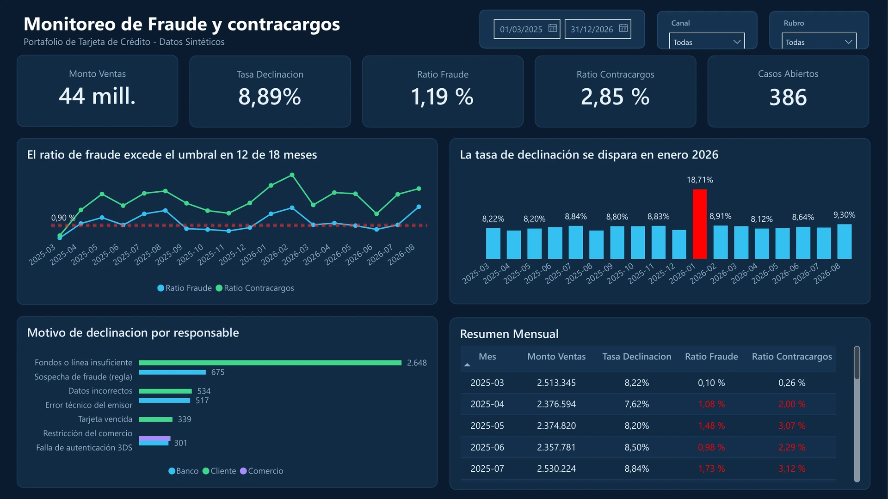

Destacado · Power BI
Monitoreo de Fraude y Contracargos
Dashboard para un portafolio de tarjeta de crédito (datos sintéticos) que identifica los meses en que el ratio de fraude supera el umbral, detecta picos de declinación y atribuye cada motivo de rechazo a su responsable: banco, cliente o comercio.
12 / 18meses sobre umbral
18,7%pico de declinación
386casos abiertos
Demuestra: Especialista de Fraudes, Banco G&T Continental (2021–2023)
Caso completo y repositorio en publicación